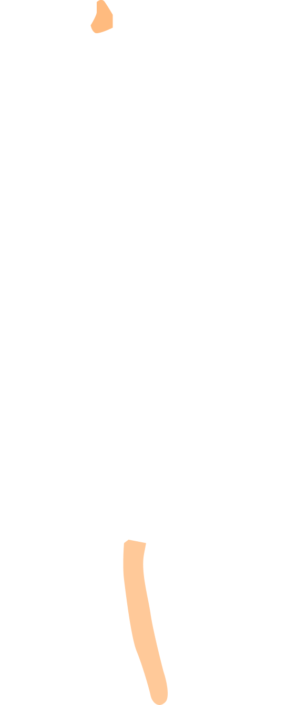
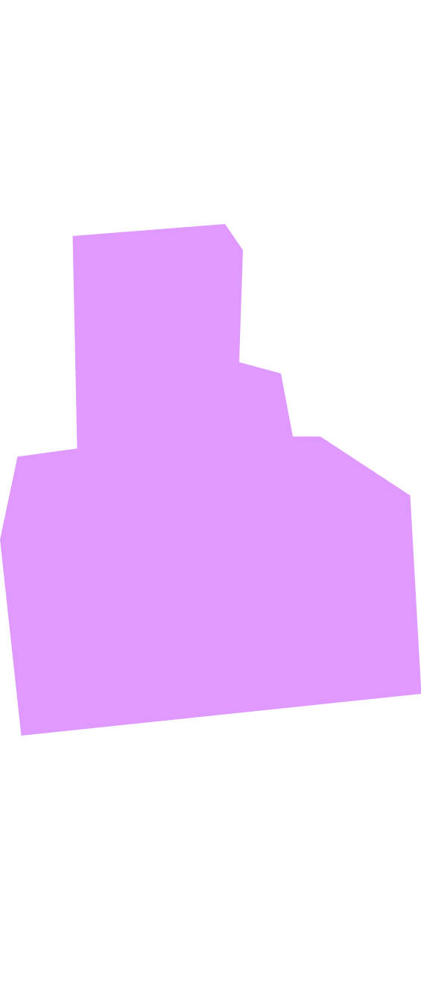
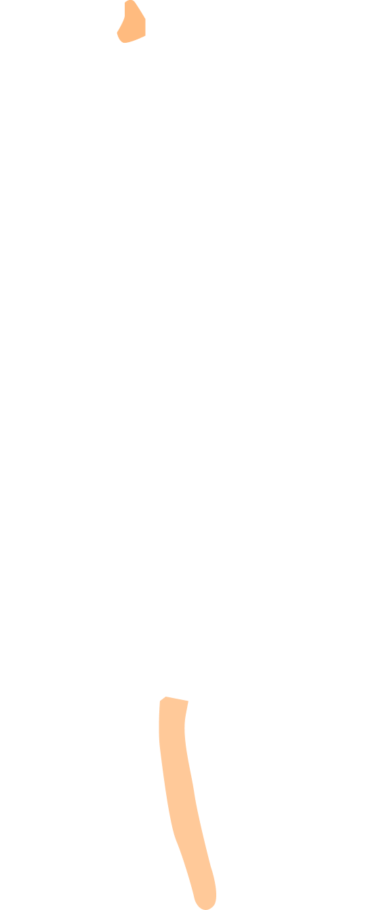
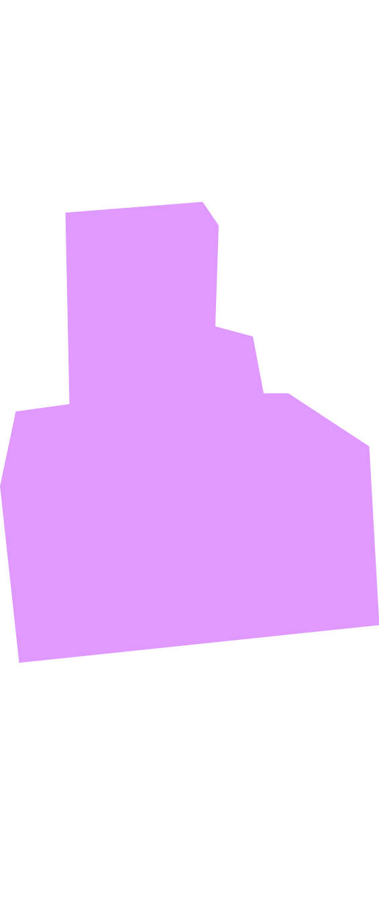

Data-probe 2
23 October 2023 (WS1)
Mendrisio (CH)
Participant 2
She is a research fellow and a lecturer in data visualization, with a professional focus on this field. Throughout her career, she has collaborated with various experts and institutions, enriching her expertise. She is excited to participate in the project, motivated by both her professional interest in data visualization and her personal experience of dealing with long-term urinary tract infections.
Written description:
I have suffered from urinary tract diseases for about 15 years. I still remember the first cystitis (or at least the first one I can remember because of the pain): I was on the ***, on holiday with my first boyfriend, and I had attributed all that pain to excessive sexual activity. Cystitis (or maybe something else because I also remember whitish discharge) had ruined my first elopement: after two days I could barely pee, and having intercourse was impossible. I also remember the feeling of guilt I had — I kept apologising to ***, as if it was my fault. From that time on, I started suffering from mild cystitis almost once a month. I had talked it over with my gynaecologist at the time, and she had given me sachets of cranberry supplements to take the week before my period every month. I had noticed that the cystitis mostly occurred in the pre-menstruation period, and with the sachets it seemed to get a little better. At the time, I didn't talk about it with my boyfriend — I was ashamed, as if I felt that something in my body wasn't working right, as if I wasn't made right, not fit for penetration. I have to admit that once this relationship was over the cystitis became rarer (but not completely gone!), so I started to think the problem could not just be physical — there had to be some other factor. For at least a couple of years, I did not talk to the gynaecologist about it in depth. As soon as I felt that my lower abdomen started to tense up and the desire to pee was more frequent, I bought two bottles of low fixed residue water, ate a box of blueberries (so I had read on the internet), and the symptoms improved after a couple of days. The most painful episode, however, was about eight years ago, when the cystitis became haemorrhagic and I had a fever of 38°C. I remember the heat and the cold, the pain of almost not being able to walk. I remember I felt like crying. While I was waiting for the metro at ***, I wanted to scream because of the very strong burning I felt starting from my urethra and radiating down to my lower abdomen. And then the blood, bright red, different from that of a normal menstruation. That evening I told my mum about my cystitis for the first time, and I also told my new boyfriend — without shame. I ran to the first pharmacy on duty and with tears in my eyes I asked them to help me get better, and they gave me Monuril. The day after that night, I did not sleep. I did not go to university. My body was numb, tired, and I felt like a giant bruise in place of what I think is the bladder. However, the antibiotic seemed to have worked: within 24 hours I was as good as new. Since that night, I started to take the matter more seriously and told myself, “If it happens again, I will go to the gynaecologist.” Shortly afterwards, I went on holiday with my boyfriend and some friends. Again, like a few years before, I suffered from cystitis. I remember begging a pharmacist in *** to give me something to make me feel better (Cys-Control Canneberge). Only after four or five days without intercourse did the pain go away completely. After this experience, I really began to think that my life could never be the same again, especially in the sexual sphere. Shortly afterwards, in fact, I took the decision to have more in-depth analyses, requesting urine and blood tests on the advice of the gynaecologist. I tested positive for Escherichia coli and was diagnosed with very strong bacterial cystitis, probably due to an existing chronic cystitis. I did an initial one-month treatment — taking antibiotic tablets by mouth, vaginal ova and douches, combined with a diet low in fat, refined flours, dairy products and irritating foods. Although it has been many years now, I remember this episode as the last truly traumatic one. I still often suffer from ailments such as cystitis, but I have learnt to recognise the first symptoms, which in my case correspond to a sensation of pain and swelling in the bladder that is relieved as soon as I contract my pelvis as if I wanted to pee. As soon as I realise this, for three days I avoid alcohol, fizzy drinks, spicy food, fat, dairy products... in short, for three days I eat courgettes, chard and brown rice. If the cystitis comes anyway, I immediately do a course of Monuril. I tried to keep a diary to mark when it would occur and I noticed that in addition to occurring before my period, it also preceded my liver pains (I suffer from gallbladder sludge). Sometimes, when the pain was very strong and I did not have Monuril with me, I took the anti-inflammatory (OKI) to get some relief. Ever since I started listening to my body and realising that this pain was not only due to sexual activity, I have less pain and I have discovered that, in my case, a correct and balanced diet and hydration are my way of preventing very painful cystitis. If I suffer from dysentery or constipation, I take all the necessary precautions. I am very careful how I wash myself, and I only eat “safe” food. My sex life has changed: I pee and wash myself immediately after every intercourse. However, just in case, I always take two sachets of Monuril if I go away for two days.
Picture of the probe:
 



List of components:
Oral description:
"Let's say that the shape is primarily meant to represent a flow that is actually both temporal and metaphorical of peeing. Then perhaps this murky yellow helps. Actually here I have tried to represent what more or less are the usual symptoms of my cystitis, I have cystitis now less than once a month, so every two months at least once, not very serious. The last very serious episode of cystitis in salt this summer I had a fever and everything, there's very serious... in the sense that it really destabilised me. But, well, this is more or less an attempt to represent temporally what happens to my body as if it were a totem I keep there and I remember where I am, so at the beginning what happens is that I notice a frequent urination, darker and darker, you can't see it (from the artefact) but the idea was more or less that, that it is followed by a swelling and the swelling in the lower abdomen then becomes a discomfort. A difficulty in the note, in going to the bathroom. So, a first difficulty, combined with pins and little balls that represent the roughness of that sensation of pins in the urethra, which is what this thing is for me. Then even more swelling follows. That is, for me, I really feel this very strong pain of swelling behind the bladder, and for me, that is, it is what is also telling me: the worst is yet to come. And indeed, the worst is this sandpaper that is thin but red. And then nothing, well, this is a bit too long (ref. thread), but it was more to give the idea of this thing. And I thought about it mainly because sometimes he might look at it like this, no? That is, think, OK, this is where I start, that is, this is the worst symptom that has happened to me. Like, and it is a path that I have also tried to follow over time, like, how did I get to this point? But there is always this swelling first, so then over time, I have learned a little to recognise the pre-pre-symptoms. And so, actually, after taking a lot of antibiotics and drinking cranberries in abundance, I discovered that diet is what helps me the most. That is, as soon as I feel that something might happen, for three days I eat brown rice and things… a diet as low as possible in fats, in inflammatory things. And that's it, this is my story and memory, I don’t know how to do it here... with the tail.”